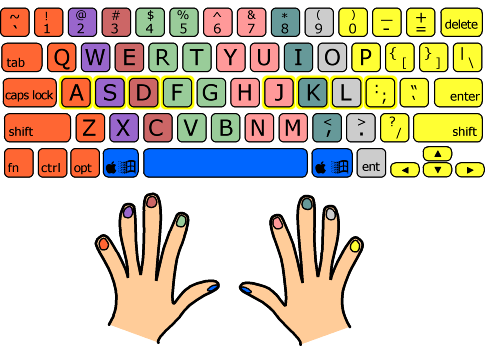

Proper finger placement on the keyboard is important to improving your score!
swap_vertMore Tips

- Credit for these tips go to Key Hero
- 1) Accuracy
I had been trying to improve my speed for months and I was not seeing much improvement. Once I slowed down and started being more accurate instead of trying to type faster I started seeing an increase in my typing speed. I feel more in control as well. I still have a way to go for my personal goal but am pleased to see that I am now improving and relaxing more.
Learn to be accurate first then improve speed. Because if you make mistakes all the time the longer it will take you to type. Every time you backspace takes longer than if you slow down just a tad so you can type accurately. I still makes a lot of mistakes but I realize when I slow down to be accurate I actually tend to type slightly faster.
-
2) Practice
For new typists: Practice. Get used to the home keys work to the point where you do not need to look at both what you are typing, or your fingers on the keyboard.
For advanced typists: Practice. Develop muscle memory for typing certain types of commonly used letter parings. Identify the combinations of letters for certain words that give you trouble and practice typing them in particular to the point where you no longer need to think when doing so.
My tip to improve your typing speed is to not only practice often, but practice correctly. Try to get rid of bad typing habits and replace them with good ones. For example, you should use every single finger when typing instead of relying on the use of fingers with which you're most comfortable. Full utilization of both hands is necessary to achieve your highest typing potential.
-
3) Stretching
When my wrists get stiff from typing, I grab my fingers with one hand and stretch out my arm to full length and pull on my fingers back slowly. I then, stretch my fingers by opening and closing them, bend my hands back and forth, and rotate my wrists.
if you feel a little sore on the fingers or knuckles, just put your arms up high, and wriggle your fingers (only do this if your fingers feel sore. ) and if your knuckles hurt just put your left hand into a fist and do the same with the right. With the bottom of your left fist, tap the knuckles on your right hand and vice versa.
-
4) Know your keyboard
My tip to improve your typing speed is to feel for the "F" and the "J". As most know, those are the letters you feel for first on the keyboard. As time goes by, and you learn how to type without looking, you will not even really have to "feel" for the "F" and the "J" you will just learn the keyboard.
It is also important to familiarize yourself with the keyboard you are using. - This is essential as, if you can map the keyboard out in your mind, you wont need to look away from the screen to locate the key you need. This would also minimize time spent between getting your many thoughts onto the screen before loosing them (again).
If you are typing 60 wpm or higher, and want to get better, and not get carpal tunnel: buy a mechanical keyboard. I use red switch that I bought for both gaming/typing, and after an hour of typing, my fingers still feel fine. I wouldn't recommend red for most typists--It doesn't have the feedback that other switch types have, and takes a while to get used to not bottoming out the keys all the time.
-
-
5) Rhythm
What is important is developing a rhythm, not to hurry, but to be accurate, first-priority. Speed comes naturally with practice and time. Further, one must push one's self to perform better, but acknowledging that efficiency only is established, along with effectiveness. In closing, one must learn to type only what one sees/reads; never change the words, unless, of course, it is an editing ... exercise/test. One only types what one sees or reads!